Does explicitly warping the garment help?
HR-VITON explicitly predicts a flow field and resamples the garment pixels, then a SPADE image generator synthesizes the person wearing that warped garment. Official pretrained weights; no training performed. Result: HR-VITON has higher (worse) mean expert distance than LeFFA in all seven measured regions. Native masking does not reverse this result. This older warping baseline is fast, but it does not improve the measured regional fidelity in this test.
Same 128 paired VITON-HD test cases and 1024×768 outputs. Primary HR-VITON uses the existing benchmark mask; native HR-VITON masking is a separate sensitivity check. Both retain required native parse-agnostic, cloth-mask and DensePose inputs. Original eight-model outputs and scores are unchanged.
Lower regional feature distance is better. The primary graphs contain nine models. Native-mask HR-VITON is listed separately in the table.
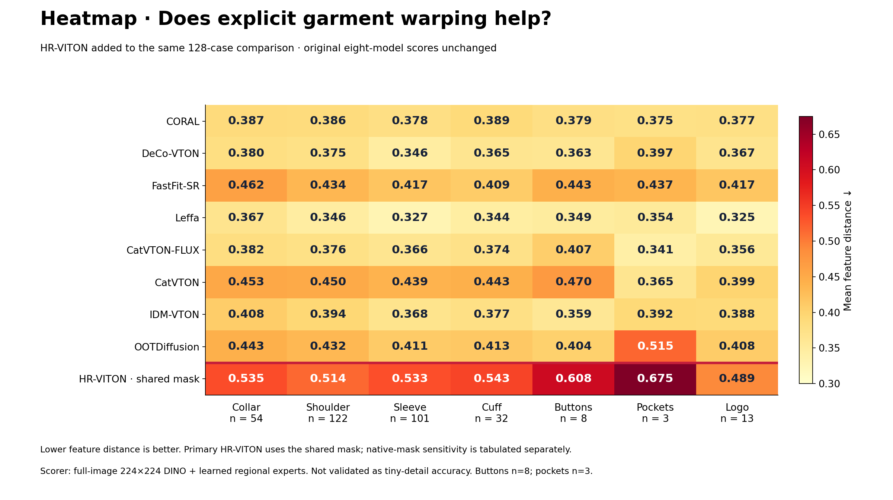
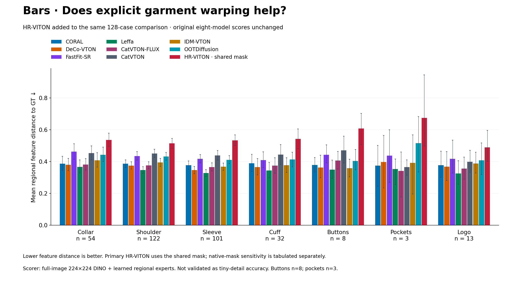
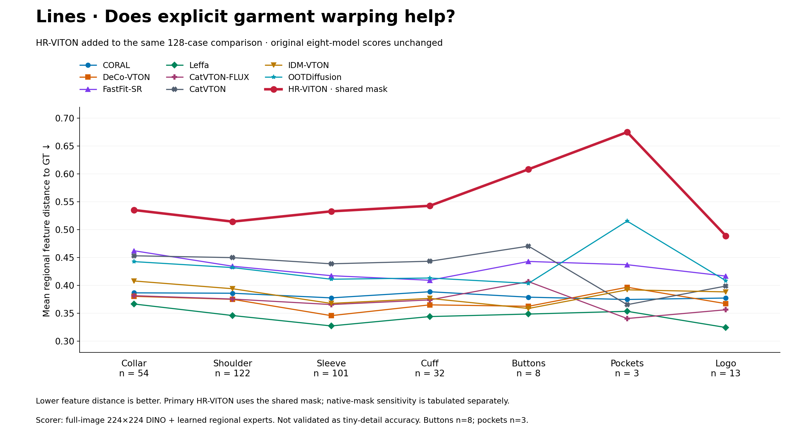
Exact scores
| Model | Collar | Shoulder | Sleeve | Cuff | Buttons | Pockets | Logo |
|---|
| CORAL | 0.387 | 0.386 | 0.378 | 0.389 | 0.379 | 0.375 | 0.377 |
| DeCo-VTON | 0.380 | 0.375 | 0.346 | 0.365 | 0.363 | 0.397 | 0.367 |
| FastFit-SR | 0.462 | 0.434 | 0.417 | 0.409 | 0.443 | 0.437 | 0.417 |
| Leffa | 0.367 | 0.346 | 0.327 | 0.344 | 0.349 | 0.354 | 0.325 |
| CatVTON-FLUX | 0.382 | 0.376 | 0.366 | 0.374 | 0.407 | 0.341 | 0.356 |
| CatVTON | 0.453 | 0.450 | 0.439 | 0.443 | 0.470 | 0.365 | 0.399 |
| IDM-VTON | 0.408 | 0.394 | 0.368 | 0.377 | 0.359 | 0.392 | 0.388 |
| OOTDiffusion | 0.443 | 0.432 | 0.411 | 0.413 | 0.404 | 0.515 | 0.408 |
| HR-VITON · shared mask | 0.535 | 0.514 | 0.533 | 0.543 | 0.608 | 0.675 | 0.489 |
| HR-VITON · native mask | 0.539 | 0.517 | 0.524 | 0.538 | 0.599 | 0.655 | 0.497 |
HR-VITON versus LeFFA
Negative differences favor HR-VITON. Paired 95% bootstrap intervals; 2,000 draws.
| Region | n | HR-VITON − LeFFA | Paired 95% interval |
|---|
| Collar | 54 | +0.169 | +0.133 to +0.203 |
| Shoulder | 122 | +0.168 | +0.140 to +0.198 |
| Sleeve | 101 | +0.206 | +0.176 to +0.238 |
| Cuff | 32 | +0.199 | +0.147 to +0.248 |
| Button | 8 | +0.260 | +0.165 to +0.357 |
| Pocket | 3 | +0.321 | +0.109 to +0.691 |
| Logo | 13 | +0.164 | +0.097 to +0.231 |
Inspect every case
Flatlay → warped garment → final image, alongside GT and LeFFA. The selector includes all 128 cases in the original manifest order.
Open full-size image 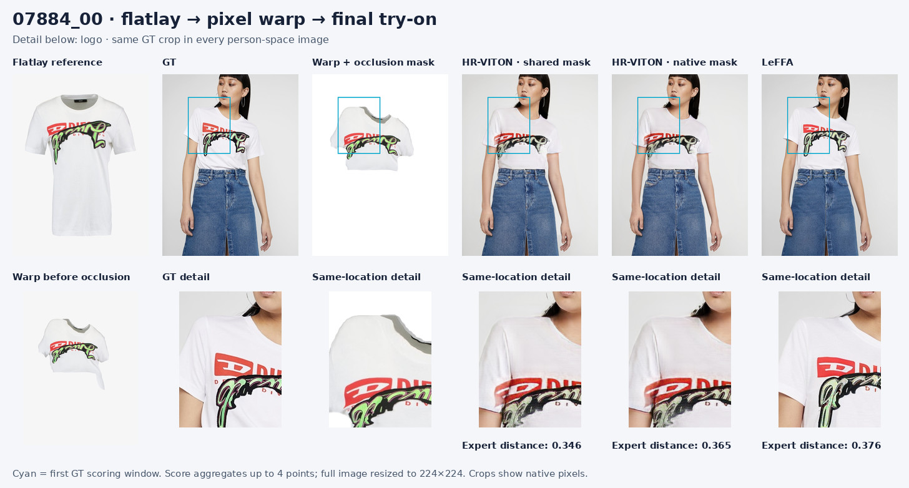
Original detail examples
Same seven cases as the earlier comparison. Cyan boxes mark shared GT scoring locations; the lower row shows larger crops.
Collar · 14009_00
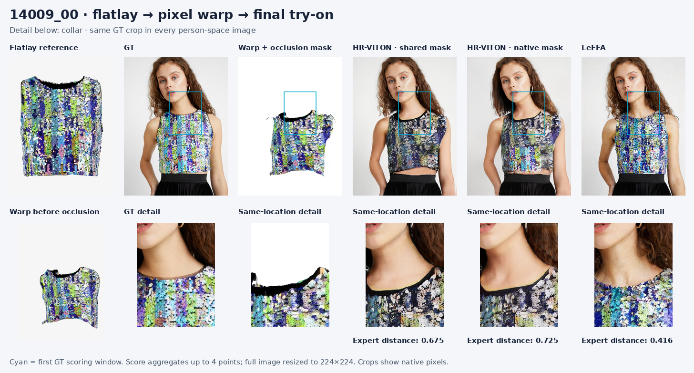
Shoulder · 05910_00
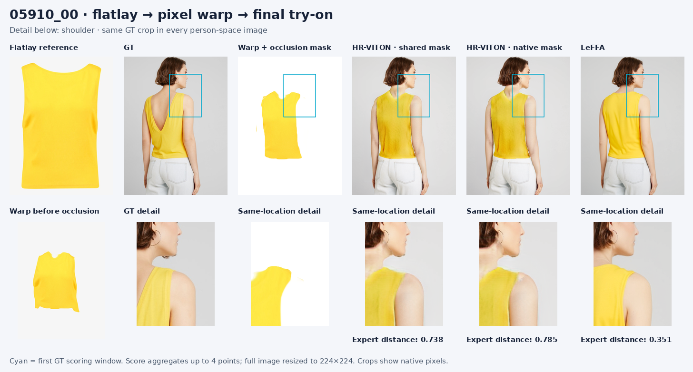
Sleeve · 12749_00
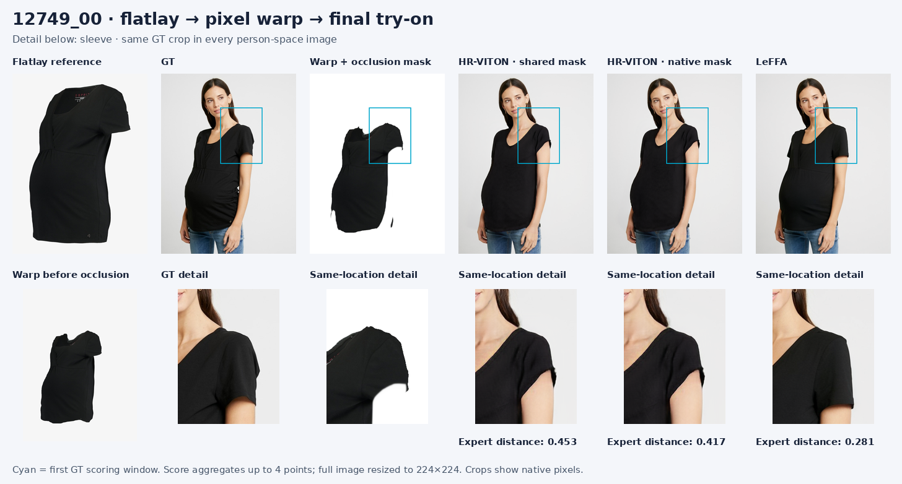
Cuff · 02253_00
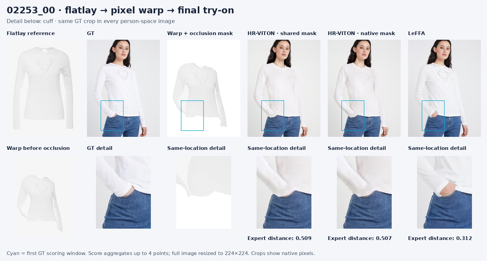
Button · 07212_00
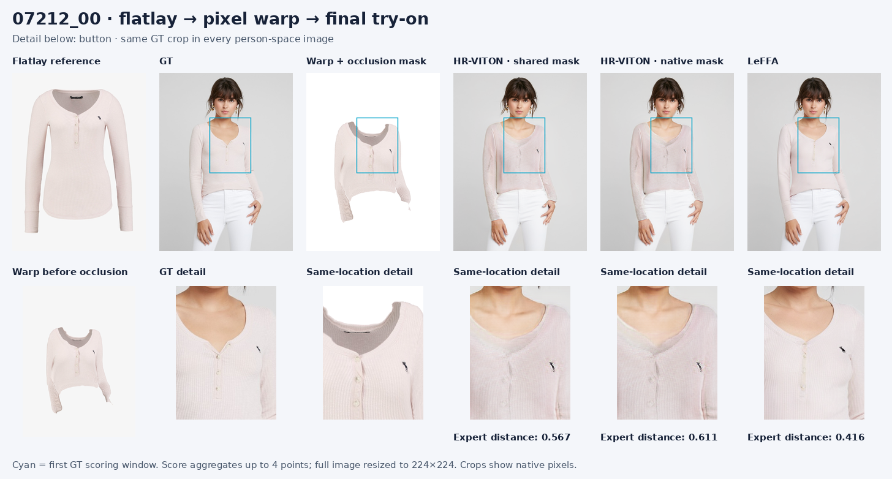
Pocket · 02810_00
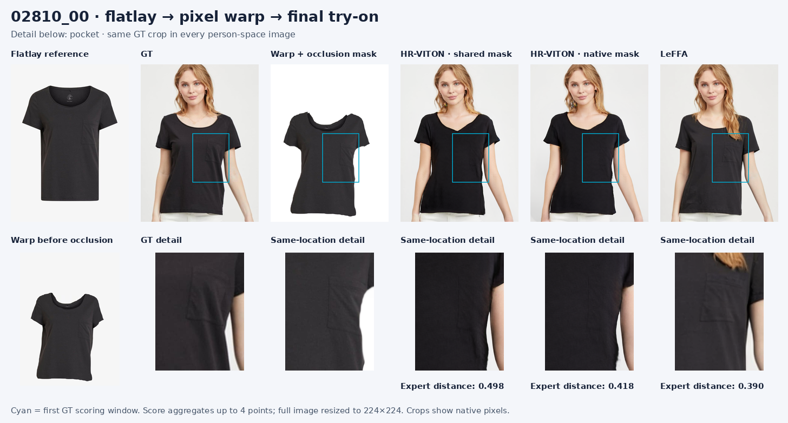
Logo · 04847_00
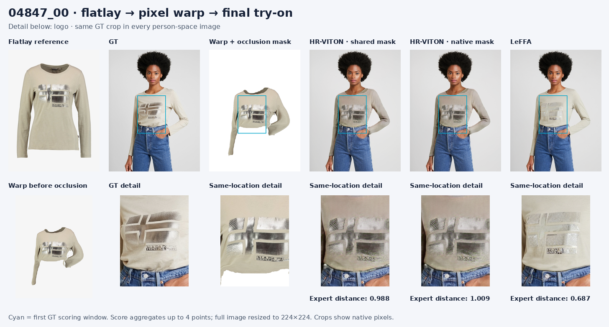
Measured runtime
Measured on NVIDIA GeForce RTX 5090: median warp 0.015 s + image synthesis 0.099 s; median combined model time 0.114 s/image. Excludes loading, preprocessing, PNG writes and scoring; batch one, FP32. Peak allocated memory 3.54 GiB. H200 was unreachable; this run used the local GPU.
What these scores can tell us
Lower is closer in the learned feature space, not an accuracy percentage. Frozen DINO experts resize each full image to 224×224 and read 5×5 windows on a 16×16 grid. This retrieval-derived scorer is not validated as tiny-detail accuracy. We reuse the original Molmo GT points; new prediction localization is not evaluated. Buttons have 8 cases and pockets 3. No eligible GT detections for lapels, buttonholes or zippers. Automatic labels are retained from the original run; its collar example 14009_00 is visibly a neckline.
Local scorer validation reproduced four original LeFFA records within 0.0001. The comparison is between complete released systems, not an experiment isolating warping alone.
HR-VITON official code and paper · Machine-readable summary and validation